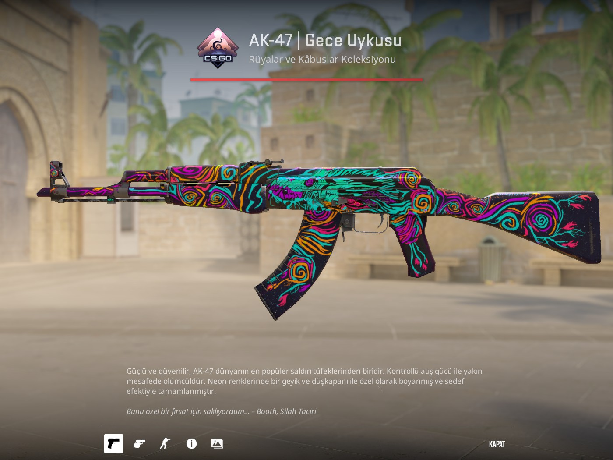
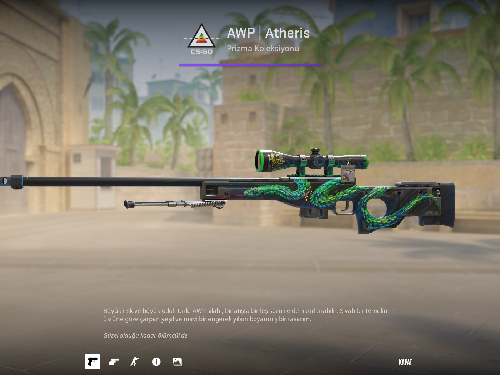
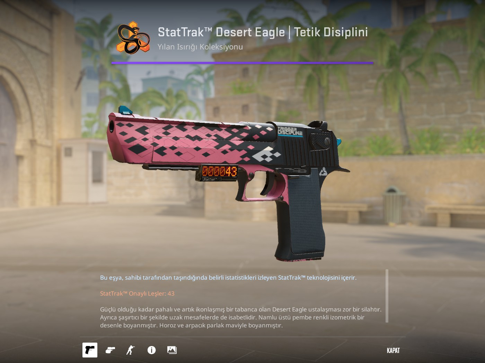
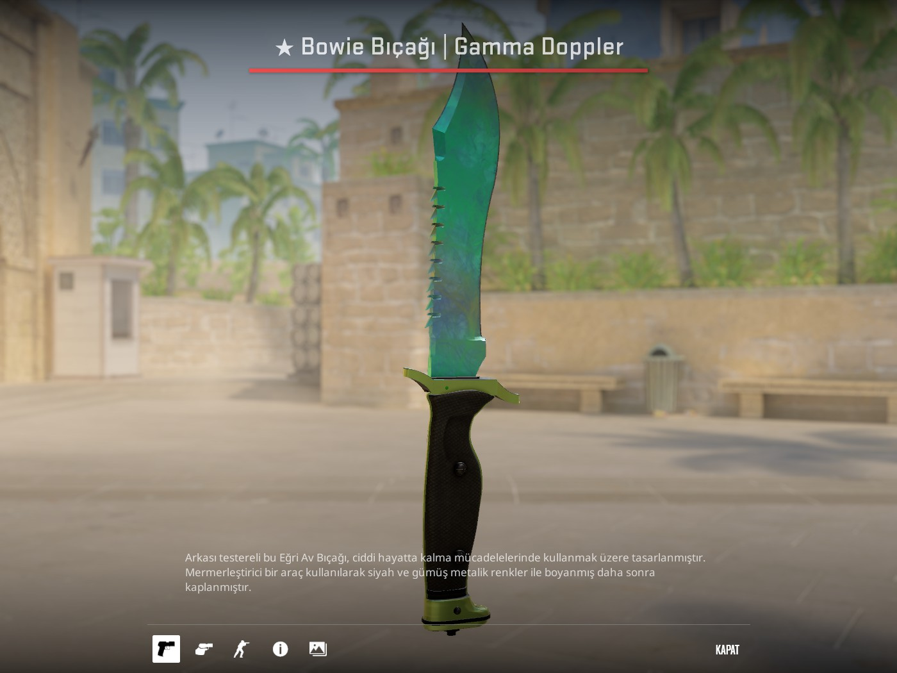

Counter-Strike 2 oyununda tüfekler, tabancalar ve bıçaklar oyuncuların oyun tarzına göre büyük önem taşır. Bazı silahlar yüksek hasar verirken bazıları daha dengeli ve kontrollü kullanım sunar.
AK-47, Terrorist tarafının en güçlü silahlarından biridir. Yüksek hasarı sayesinde özellikle kafa vuruşlarında çok etkilidir. Sekmesi biraz fazladır fakat doğru kullanıldığında oyunun en etkili silahlarından biridir.

M4A4, Counter-Terrorist tarafında sık kullanılan otomatik tüfeklerden biridir. Seri atış imkanı ve dengeli kullanımı sayesinde savunma yaparken oyunculara büyük avantaj sağlar. Özellikle takım oyununda oldukça kullanışlıdır.

AWP, tek atışta rakibi etkisiz hale getirebilmesiyle oyunun en güçlü keskin nişancı silahıdır. Kullanımı dikkat ve refleks ister. Ekonomisi pahalıdır fakat doğru elde çok etkili bir silahtır.

Desert Eagle yani Deagle, tabancalar arasında yüksek hasarıyla öne çıkar. Mermisi azdır ve kontrolü zordur ancak doğru atış yapıldığında çok tehlikelidir. Ekonomi roundlarında oyuncular tarafından sık tercih edilir.

Kelebek bıçak, CS2 içinde en dikkat çekici bıçak modellerinden biridir. Özellikle açılış animasyonu ve görünüşü nedeniyle oyuncular arasında oldukça popülerdir. Daha çok kozmetik değeri ile öne çıkar.

Bowie Knife, büyük ve keskin yapısıyla güçlü bir görünüme sahip olan bıçaklardan biridir. CS2 oyuncuları tarafından görünüşü ve farklı animasyonu nedeniyle beğenilir. Oynanıştan çok görsel açıdan tercih edilen ekipmanlardan biridir.
